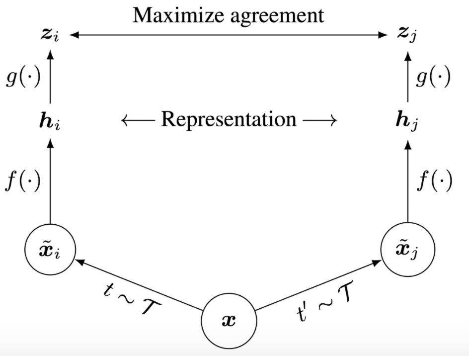

Stanford-CS231N-Assignment札记7：自监督学习与课程总结
Stanford2021年春季课程CS231N:Convolutional Neural Networks for Visual Recognition的一些作业笔记，这门课的作业围绕视觉相关的任务，需要从底层手动实现一大批经典机器学习算法和神经网络模型，本文是作业的第七部分，包含了自监督学习和整个课程的总结
自监督学习Self-Supervised Learning
自监督学习的概念
自监督学习(Self-supervised Learning)是这几年机器学习和深度学习领域非常火热的一个研究方向，这种学习方式可以在数据没有标注的情况下学到好的数据表示，并且这种方式取得了巨大的成功，因为实际场景中，很多数据集都是没有标注或者难以标注的(要花费大量的成本)，而自监督学习可以在数据没有标注的情况下就学到足够好的数据表示，并可以将其用到下游任务中。
另一个问题是，什么样的表示才是一个好的表示，一般我们认为能够尽可能提取数据中的重要特征并将其编码到向量空间中的才是好的表示，同时具有相似特征的数据，它们的表示向量也应该相似，比如两张图片中如果表示的是同一个物体，那么他们的表示向量应该比较接近，否则两张图的表示向量应该会有很大的差别，
对比学习Contrastive Learning
对比学习就是一种常见的自监督学习方式，这个作业中需要实现的其实就是一个经典的对比学习算法SimCLR，对比学习的一个基本想法是，给相似的数据学习出相似的表示，而不相似的数据学习出不相似的表示，也就是说数据的特征是通过对比得到的。
那么我们怎么得到两张相似的图片和两张不相似的图片呢？自监督学习使用的数据是没有标注的，因此我们不能用label来确定数据之间是否相似，而对于图像来说，答案就是可以用图像的各种变换自己生成两张相似的图像，称为一个positive pair，然后以这两张图像是高度相似的为先验知识来进行训练，训练过程中，我们希望得到这两张图尽可能相似的表示，这个过程可以用下面的这张图来表示：

模型的实现
作业中使用了已经预训练过的CNN模型来帮助完成任务，有论文研究表明，使用预训练过的模型进行对比学习的效果要好于从头开始训练。
数据增强
首先我们要实现的就是一个数据增强的模块，我们通过输入一张图片，并将其进行一定的随机变换得到两张相似但是不完全相同的图片，这里可以使用torchvision.transform中的API来对图片进行各种各样的处理操作，具体的有：
1 | def compute_train_transform(seed=123456): |
- 根据作业的要求，我们要按照顺序并以一定的概率对一张图片分别进行调整大小，随机的水平翻转，随机的颜色变换，随机的灰度化等操作。
定义损失函数
另一个重要的问题就是我们如何定义训练时候的损失函数，在对比学习中我们的一条数据实际上是两个相似的图像，因此我们要计算他们之间的相似度，并且让相似度最小化，这样才能达成我们的训练目标。因此我们需要定义两个图像表示之间的相似度，进而继续定义出训练时候的损失函数，而SimCLR中，对相似度和损失函数的定义是：
这里采用的相似度函数其实就是余弦相似度，而损失函数则进一步和一个批次N组数据中的其他2N张图片都进行了对比，起到突出当前一组图片是最相似的这个目的。因此一个小批量数据的总体loss函数就被定义成了
下面我们就来实现整个loss的计算过程：
1 | def sim(z_i, z_j): |
后面的内容因为需要GPU，当时做的时候到这一步就没有再做下去，反正测试点都已经通过，就暂时先到这里结束了吧。
课程总结
到这里这门课程的学习基本也就结束了，CS231N无疑是入门深度学习和神经网络的最佳课程没有之一，不过我学这门课的时候并没有听他的lecture而是直接从作业入手，虽然自以为有了一点点的深度学习和机器学习的基础，但是真的做起这些有难度的作业来还是感受到了很大的困难，不过最后还是做完了，这些作业不仅从头开始实现了常见神经网络模型，这些作业串联起来也是一部简单的深度学习发展史，从传统的统计机器学习开始，到MLP，CNN，RNN，Transformer，从最传统的有监督学习，到使用各种trick防止过拟合增强模型的鲁棒性，再到生成模型，对抗训练和自监督学习，作业一步步为我们呈现了深度学习的发展历程，我们在完成作业的同时，也可以感受到深度学习作为一个data-driven的研究领域的研究思潮的变迁。